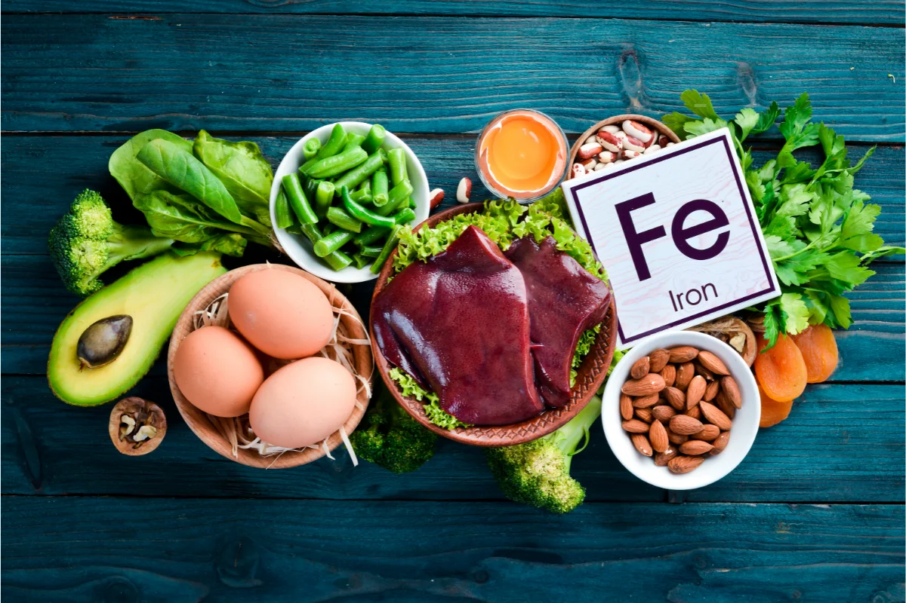

Sangrecita, higado y carnes
Son fuentes de hierro hem, el tipo que el cuerpo aprovecha con mayor facilidad.
Lo mas importante
El hierro de origen animal se absorbe mejor. El hierro de menestras y verduras tambien ayuda, pero conviene combinarlo con vitamina C, como limon, naranja, mandarina, tomate o camu camu.

Son fuentes de hierro hem, el tipo que el cuerpo aprovecha con mayor facilidad.
Aportan hierro vegetal, fibra y energia. Funcionan mejor con limon o ensalada fresca.
Ayuda a absorber el hierro vegetal. Puede venir de citricos, tomate, pimiento o frutas locales.
| Alimento | Tipo de hierro | Como aprovecharlo mejor |
|---|---|---|
| Sangrecita, higado y carnes rojas | Alta absorcion | Acompanarlos con ensalada o fruta citrica. |
| Pescado, pollo y huevo | Apoyo proteico | Incluirlos en almuerzos y cenas variadas. |
| Lentejas, frejoles y garbanzos | Vegetal | Combinarlos con limon, naranja, tomate o pimiento. |
| Espinaca, acelga, quinua y kiwicha | Vegetal | Evitar te o cafe durante la comida. |
El te, el cafe y algunas gaseosas pueden reducir la absorcion del hierro si se toman junto con la comida. Mejor dejarlos para otro momento del dia.